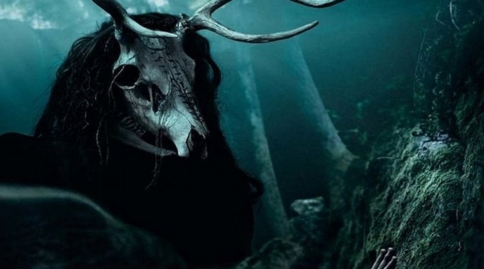
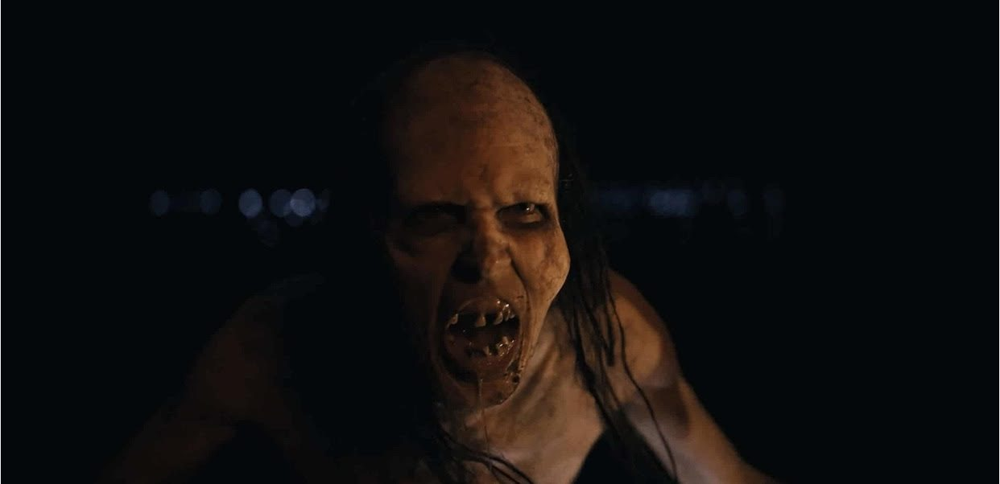

CONFIRA DEMAIS NOTICIAS DO PORTAL DE FILMES DE TERROR:
Atriz de ‘Pânico na Floresta 5’ estrelará terror INTERATIVO estilo ‘Black Mirror: Bandersnatch’

De acordo com o Deadline, Roxanne McKee (‘Pânico na Floresta’) será a protagonista de ‘The Run‘, terror interativo estilo ‘Black Mirror: Bandersnatch‘.
Para saber mais, acesseConfira uma crítica sobre a classica franquia desde os anos 2000, mas agora com um ar um pouco diferente.
Refazer? Começar de onde? Como reciclar? São muitos os questionamentos, mas uma coisa é certa: se o tema é a franquia Pânico na Floresta, convenhamos, chama a atencão de qualquer fã do genero terror.
Para saber mais, acesseCuriosidade | Confira como é a mãe do filme de terror de sucesso de 2022, Barbarian, na vida real
Para interpretar a Mãe, Davis diz que foi encorajado por seu diretor a procurar casos reais de crianças “selvagens” que foram criadas sem muita supervisão.
Para saber mais, acesse